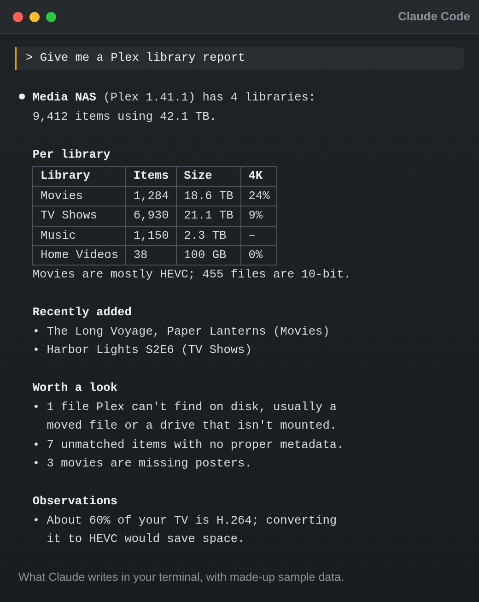
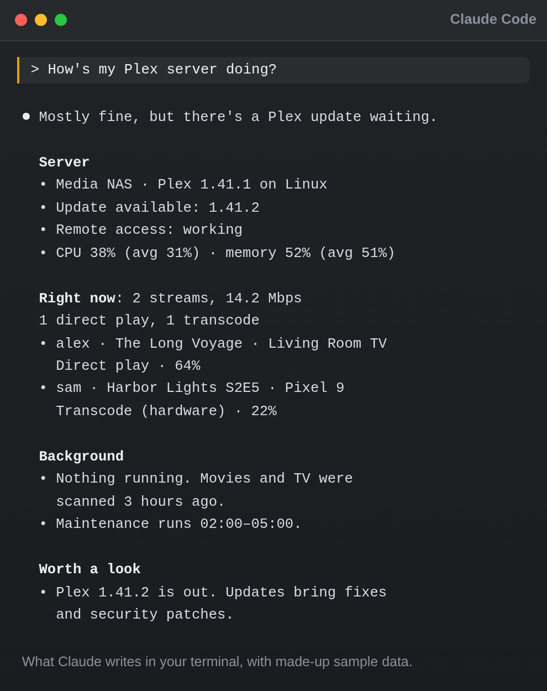
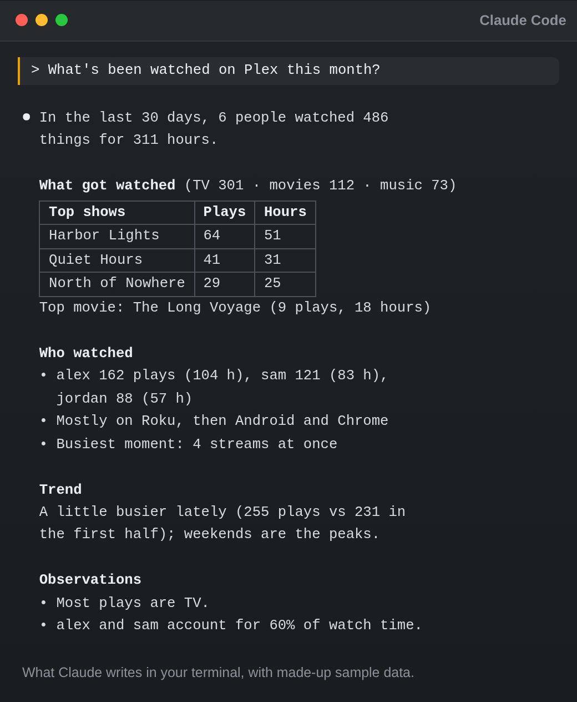
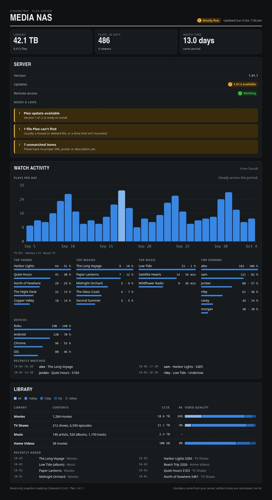
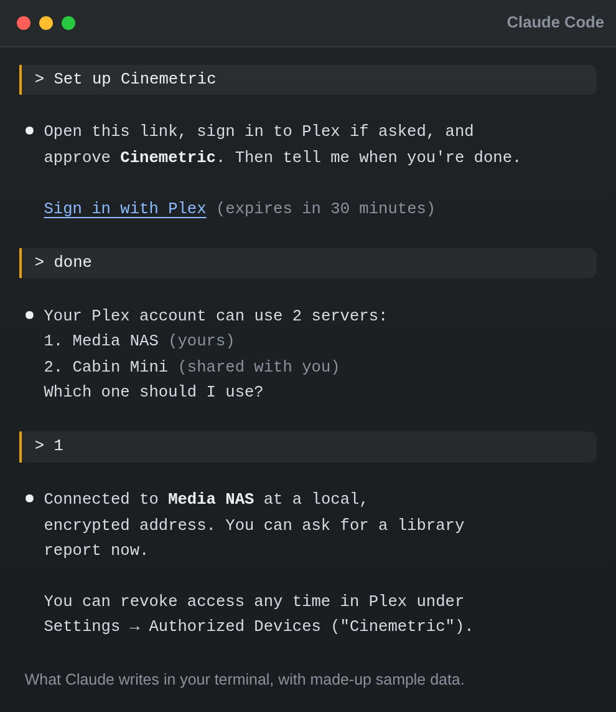

Introducing Cinemetric
I spend a lot of time inside my Plex server. Not watching things, mostly. Poking at it. How much space is left? Did that last batch of movies actually match? Why is someone's stream transcoding? Is there a Plex update waiting again?
Every one of those answers already exists somewhere. It's just scattered across Plex's settings pages, its dashboard, Tautulli, and the occasional XML view. So I built something that goes and gets them for me.
Cinemetric is a set of Claude skills for your Plex server. You install it into Claude Code, ask a question in your own words, like "How's my Plex server doing?", and get back a clear, plain-English report. What you have, how much space it uses, what quality it's in, who's been watching, and what needs tidying up. And it never changes a single thing on your server.
Why Build This?
Plex is great at playing media. It's less great at telling you what's going on underneath. The information is there, but you have to know which screen to dig through, and none of those screens tell you what any of it means.
That's the part an AI model is actually good at. Cinemetric splits the job in two: small scripts talk to Plex and collect the real numbers, and Claude turns those numbers into something you can read. "1 file Plex can't find on disk" becomes "usually a moved file or a drive that isn't mounted." "60% H.264" becomes "converting it to HEVC would save space." You get the data and the context, without having to go find either one.
The Skills: One Question at a Time
You don't have to remember any commands. Each skill knows when it's needed. You just ask, and Claude picks the right one. Here's what's available today, with more on the way.
🔑 Setup
Connects Cinemetric to your server using Sign in with Plex, the same approval screen other Plex apps use. Approve it in your browser, pick a server, and you're done. No copying tokens around.
📚 Library Report
A full picture of every library: item counts and storage used, 4K/1080p and codec breakdowns, 10-bit video, and what was added recently. Plus the housekeeping: unmatched items, missing posters, unavailable files, and very large files.

🩺 Server Health
A checkup on demand. Plex version and available updates, whether remote access works, CPU and memory use, who's streaming right now (direct play or transcode, and how much bandwidth), running tasks, library scan freshness, and scheduled maintenance, with anything that's off flagged for you.

🍿 Watch Activity
Plays and watch time, the most watched movies, shows and music, the most active users and the devices they use, daily trends, and recent plays. Ask about the last 30 days or any period you want.

📊 Dashboard
All of the above on one page, with charts. More on that below.
The Dashboard
The reports are great when you have a question. The dashboard is for when you just want to look.
Ask Claude to "Build my Plex dashboard" and you get one page that pulls together your library, server, and watch stats: total storage, plays and watch time, a plays-per-day chart, top shows, movies, music and viewers, a video-quality breakdown per library, and a "needs a look" list for anything that wants attention.
You choose where it lives. Save it as a file on your computer, publish it as a private claude.ai page you can open from anywhere, or both. Every refresh updates the same file and the same link, so a bookmark keeps working.
One detail I like: the dashboard doesn't use AI to write anything. The numbers come straight from your server, and notes like "Plex update available" come from simple built-in rules. So unlike the other reports, there's no AI interpretation to double-check, and the same data always gives you the same page.

Read-Only, and Private by Design
This is the part I cared about most. Handing an AI tool the keys to your media server should make you a little nervous, so Cinemetric is built to make that a non-issue.
- It never changes anything. Every skill is read-only. It looks; it doesn't touch.
- Your token never appears in the chat. Sign in with Plex sends it straight from Plex into a private config file on your computer that only you can read.
- You can revoke it any time. Cinemetric shows up in Plex under Settings → Authorized Devices, like any other app. Remove it there and it's done.
- Tautulli keys stay out of the chat too. If Tautulli has no login, Cinemetric fetches the key itself. If it does, Claude gives you a small one-time page that runs only on your own computer to paste it into.
Better with Tautulli (but Not Required)
If you run Tautulli, Cinemetric can use it for fuller watch stats: watch time, devices, and your busiest moments. Just ask Claude to "add Tautulli to Cinemetric" and tell it your Tautulli address.
No Tautulli? No problem. Watch Activity falls back to Plex's own history. The only difference is that Plex counts plays, not watch time.
How It Works
Three steps, and the first two are copy and paste.
- Add the marketplace. In Claude Code, run
/plugin marketplace add jeremehancock/cinemetric. - Install the plugin. Run
/plugin install cinemetric@cinemetric. - Connect and start asking. Say "Set up Cinemetric", approve the Sign in with Plex link, and pick your server. Then ask away: "Give me a Plex library report", "What's been watched on Plex this month?", "Why is Plex transcoding?"

Who Is Cinemetric For?
- Plex owners who want to know what's actually in their library, not just scroll through it
- Anyone who's ever wondered why a stream is buffering and didn't know where to look
- People with a shared server who want to see who's watching what
- Claude Code users who'd rather ask a question than dig through settings pages
A Few Honest Notes
AI can make mistakes. Cinemetric's scripts collect the numbers, but the reports you read are written by Claude. It can misread data or draw a conclusion the numbers don't fully support. Double-check anything important in Plex or Tautulli before acting on it, especially before deleting, replacing, or re-encoding files.
It's early. Cinemetric is a work in progress. Skills, setup steps, and report formats may change as it grows. Like Marquee, every capability is written down as a spec with OpenSpec before any code exists, so it's growing on a solid foundation. But it's still growing. Ideas and bug reports are very welcome on GitHub.
What's next. A few skills are on the roadmap: finding duplicate titles and how much space the extra copies use, spotting SD and 720p titles worth upgrading, and showing who has access to your server and which libraries are shared with whom.
Get Started
All you need is Claude Code, Python 3.8 or newer, and a computer that can reach your Plex server over the network. There's nothing to pip install and no SSH required. It works on Linux, macOS, and Windows.
Full setup instructions, manual setup if Sign in with Plex isn't an option, and the roadmap all live on GitHub. The project site has a tour of every skill with example reports.
- Project site: cinemetric.dev
- Source & install guide: jeremehancock/cinemetric
Technical Highlights
- Claude Code plugin: installs from its own plugin marketplace in two commands
- Read-only: never changes anything on your Plex server
- No dependencies: Python standard library only
- Sign in with Plex: your token never passes through the chat
- Optional Tautulli support: fuller watch stats when you have it
- Cross-platform: Linux, macOS, and Windows
- Open source: MIT licensed
Support the Project
Cinemetric is free, and it's staying that way. If it earns a spot in your setup and you feel like chipping in, you can throw a few dollars at ongoing development. Or, let's be honest, at another hard drive for my Plex server, which Cinemetric will now happily tell me is almost full.
Buy me a coffee →
AI Disclosure
This project was created with the help of AI.
Links
- GitHub: jeremehancock/cinemetric
- Cinemetric Website: cinemetric.dev